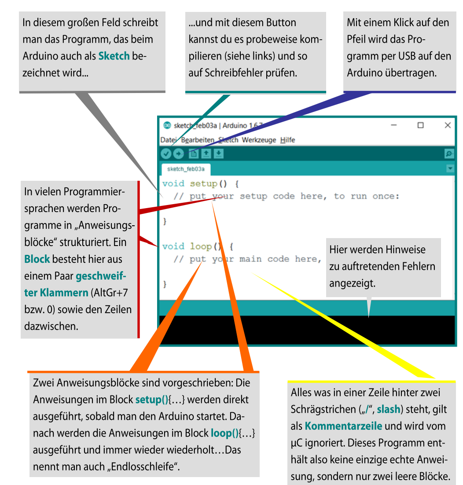
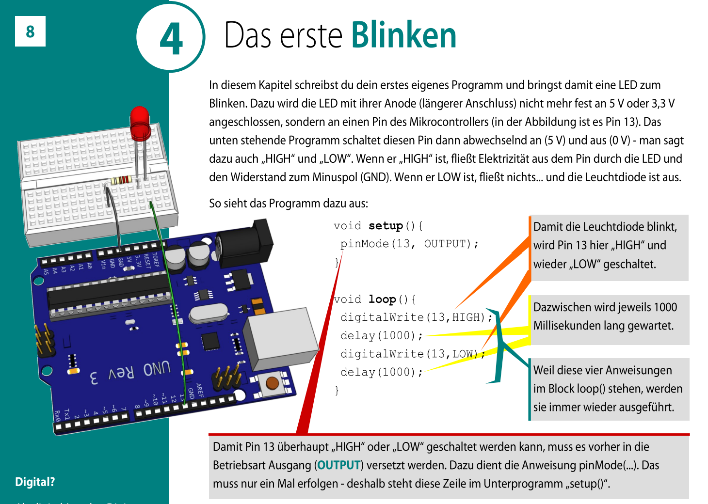
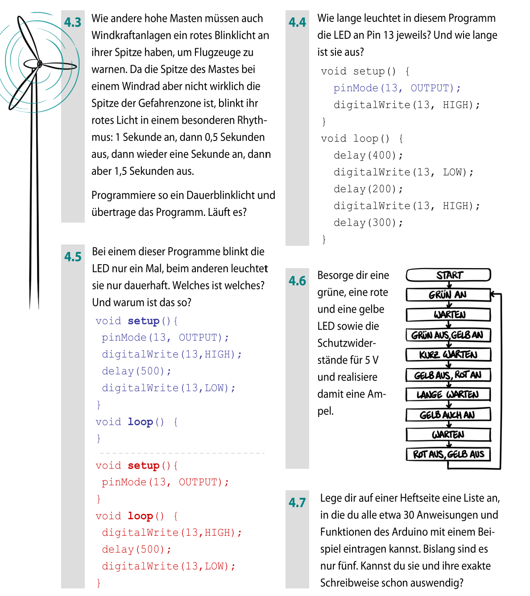

3. Ein Programm zum Programmieren
Arduino-IDE
Programme für den Arduino werden in der Arduino-Entwicklungsumgebung
(IDE) geschrieben und per USB auf den Mikrocontroller übertragen.
Verständnisfrage
Text wird gespeichert

Original – Seite 6
4. Das erste Blinken
Idee
Eine LED wird mithilfe eines Programms regelmäßig ein- und ausgeschaltet.
Damit testet man, ob Hardware und Software korrekt funktionieren.
Überlege
Text wird gespeichert

Original – Seite 7
5. Töne erzeugen
Prinzip
Durch schnelles Ein- und Ausschalten eines Pins können Schwingungen
erzeugt werden, die man als Ton hört.
Verständnis
Text wird gespeichert

Original – Seite 8
6. Unterprogramme (Funktionen)
Warum Unterprogramme?
Wiederkehrende Abläufe können in Funktionen ausgelagert werden.
Das macht Programme übersichtlicher und leichter veränderbar.
Denken wie ein Programmierer
Text wird gespeichert

Original – Seite 9
Abgabe – Seiten 6–11
Beantworte zur Abgabe:
- Was ist der Zweck der Arduino-IDE?
- Warum testet man Programme oft mit einer blinkenden LED?
- Was leisten Unterprogramme?
- Warum sind Variablen unverzichtbar?
- Wofür nutzt man die serielle Ausgabe?
Gesamtabgabe
lokal gespeichert